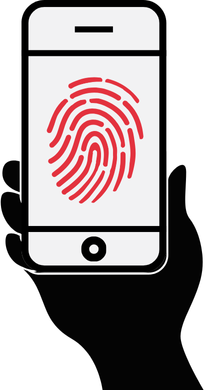
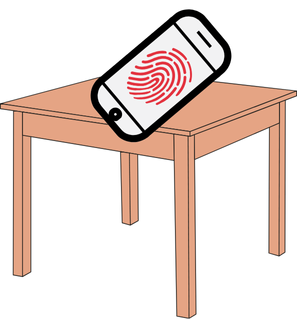
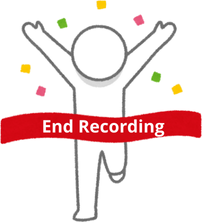

In this site, we will collect raw motion sensor data from your phone. Please follow a series of 5 steps to complete the process.
For each step, we first explain the task, and then give you around 10 seconds to complete it.
We’ve set up a clock and a movement bar to help you keep track of time and motion intensity.
If you encounter any issues, you can reset the session and start over again. Dont forget to stop the recording in the Sensor Logger app.
Before proceeding, please ensure:
Your phone's volume is at maximum.
You have enough space to walk 10 steps in a straight line.
You are standing and ready for data collection.
When you are ready, double-tap the button below to begin.
Step 1: Start Recording
Open the Sensor Logger app, confirm that the study is active, and start the recording.
Then return to this page.
Please tap the button below twice when you are ready.
Step 1: Start Recording
00:15
Step 2: On Hand
Stand up and hold your phone still in your hand for 10 seconds, as if you were reading a text.
Keep your arm relaxed and avoid any movement, including your legs.
If you think that you're moving too much, please reset the recording and start again.
Tap the button below twice when you are ready.

Step 2: On Hand
00:12
Step 3: On Table
Place your phone on a flat surface, such as a table or the floor, and leave it untouched for 10 seconds.
Make sure to place it before continuing, and do not pick it up until the full 10 seconds have passed.

Step 3: On Table
00:12
Step 4A: Repeat On Hand
Just like before, hold your phone still in your hand for 10 seconds as if you were reading a text.
This time, inaudible audio will play in the background.
Before you proceed, please confirm that your phone's volume is set to maximum.
Step 4A: Repeat On Hand
00:12
Step 4B: Repeat On Table
Once again, place your phone on a flat surface, such as a table or the floor, and leave it untouched for 10 seconds.
Inaudible audio will continue playing in the background.
This will help us assess our defenses under more challenging conditions.
Please place your phone securely before continuing.
Step 4B: Repeat On Table
00:12
Step 5A: Walk First 10 Steps
Please find a place where you can walk 10 steps in a straight line.
Hold your phone naturally in your hand and take exactly 10 steps at a regular pace.
If you encounter any difficulties or disruptions during this process, please reset the session and start again.
When you are ready, tap the button twice and begin walking.
Step 5A: Walk First 10 Steps
00:15
Step 5B: Walk Second 10 Steps
After completing the first 10 steps, pause briefly, then change direction and walk another 10 steps in a straight line.
It’s important to maintain a regular pace and take exactly 10 steps.
After this, you will be done with this data collection session.
Tap the button below to continue.
Step 5B: Walk Second 10 Steps
00:15
Finish Recording
Congratulations! You have successfully completed all steps.
Please return to the Sensor Logger app and tap the 'Stop Recording' button to finish the session.

We greatly appreciate your participation in this study.
We encourage you to go on and take another data collection session.
Your participation in 10 data collection sessions is crucial for the success of this study.
Completed sessions on this device:
0
You can keep track of the number of sessions you have completed using this counter.
Important Note
Please do not delete your browser cookies for the duration of the study. This is crucial for the experiment to function properly and for us to differentiate your device from others.
Stop Data Recording!
Please stop the data recording in the Sensor Logger app before resetting the session.
This is crucial to prevent data loss.